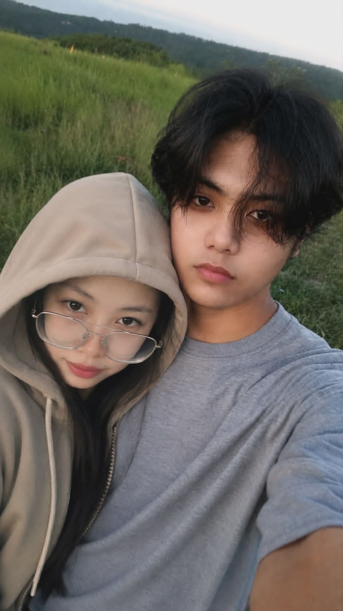

-
My Dearest Lunarium,
From the moment I first laid eyes on you at Robinsons Supermarket, I knew there was something incredibly special about you. That day, as our paths crossed among the bustling aisles, a spark ignited within me ,a connection I couldn't quite comprehend then but have come to cherish deeply.
As I reflect on our journey together, I am filled with gratitude for every moment we’ve shared. We've weathered storms, faced our lowest points, and stood by each other when life felt heavy. It was in those challenging times that I learned the true meaning of love and partnership. You were my strength when I faltered, and your laughter became the light that guided me through the dark. I will forever be thankful for your patience and understanding, even when I stumbled in providing the love and security you deserved.
I acknowledge my shortcomings and the pain I’ve caused with my inconsistency and mistakes. I am truly sorry for the times I let you down and for the hurt my actions brought upon us. Please know that every transgression has only deepened my desire to be better and to show you just how much you mean to me. You deserve a love that is unwavering, a love that lifts you, and I am committed to being that man for you.
For all the times that I hurt you darling, even those fresh ones where we had our huge fights and I said things I shouldn't have, I want you to know that I am truly sorry. I never intended to cause you pain, and it breaks my heart to think of the hurt I've caused. Please forgive me for my mistakes, and know that I am committed to learning from them and being a better partner for you.
The memories we’ve created together, laughing at silly moments, teasing each other, and sharing our innermost thoughts, are treasures I hold dear. Those late-night calls filled with laughter and mischief remind me of the incredible bond we share. It’s those moments that make me long for a future where we can build our dreams together.
I fantasize about a life where I can be the man you deserve, where we can escape to a peaceful place and create a loving home. I dream of supporting each other as we navigate life's challenges, of traveling the world hand in hand, especially to the breathtaking landscapes of Switzerland. I can picture us there, surrounded by beauty, creating memories that will last a lifetime.
In every moment we’ve shared, I’ve come to realize that you are the one I want to spend my life with. You are the one who understands me, accepts me, and loves me for who I am. I want to be the one who stands by your side through thick and thin, who supports your dreams, and who loves you unconditionally. I want to be the one you can rely on, the one you can trust, and the one you can call home.
Darling, you hold my heart in your hands, and I can't bear the thought of you falling for someone else. I want to be the one you turn to for comfort, for adventure, and for love. Together, let’s strive for the future we both desire. I believe in us, in our dreams, and in the love we share.
With all my love and longing,
Reinz Lee, Solace